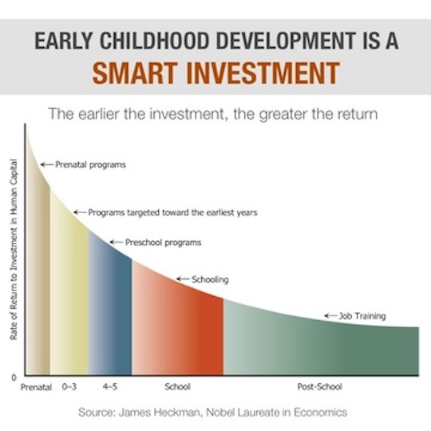

As workforce participation changes, and two working parents becomes the norm1, there is a growing need for childcare, defined as care for children from birth to 5 years.
Since 2000, there has been significant research showing not only the importance of quality childcare in closing the achievement gap2, but also the return on investment in childcare for governments3. This means everyone benefits, not just the child and the parent, but society as a whole.
Return on investment in childcare is higher than all other education levels

Despite both the demand for and benefit of quality childcare, it remains unattainable for many. While the federal and state governments provide funding through programs such as HeadStart, it is estimated that only 42% of eligible children access that funding4. Additionally, the chart below shows the cost of childcare is greater than the cost of public college in many states.